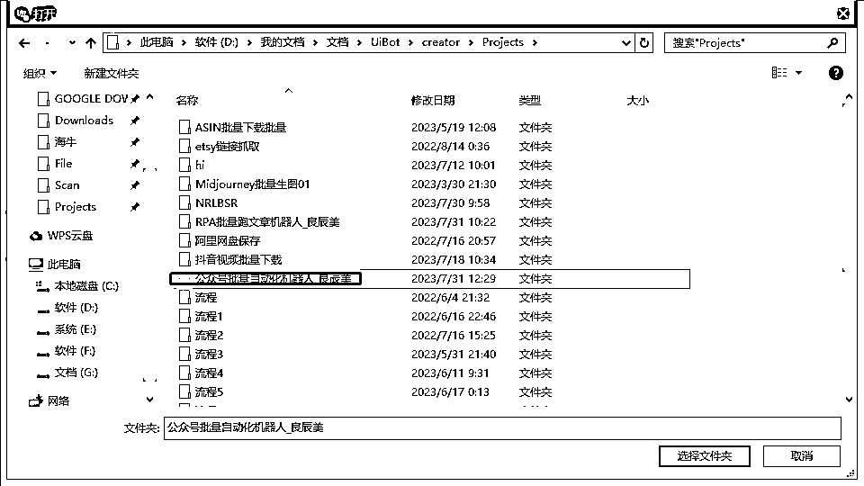
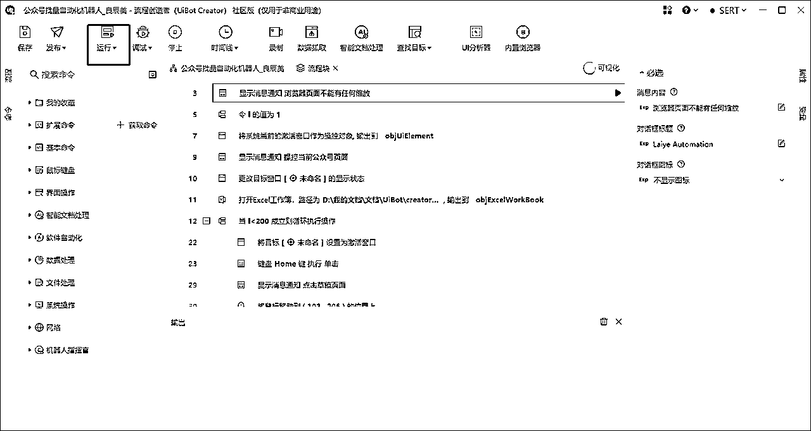
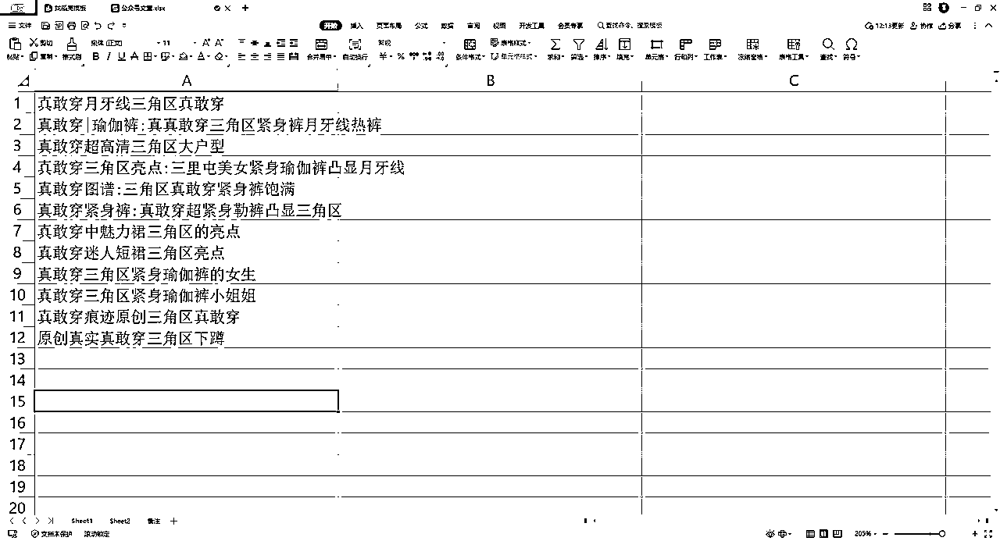
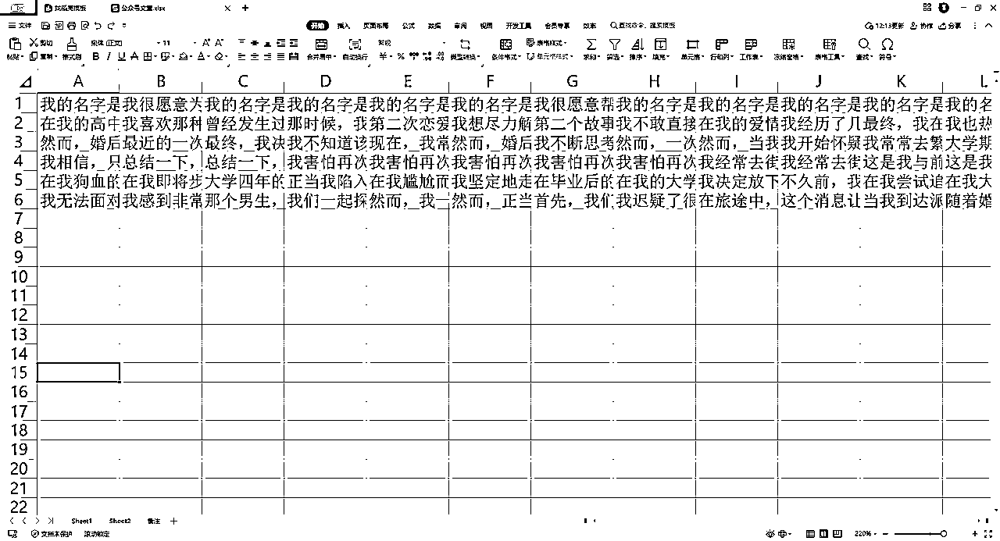
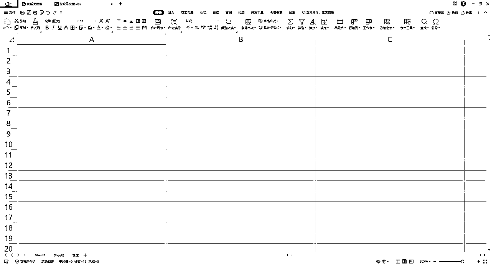
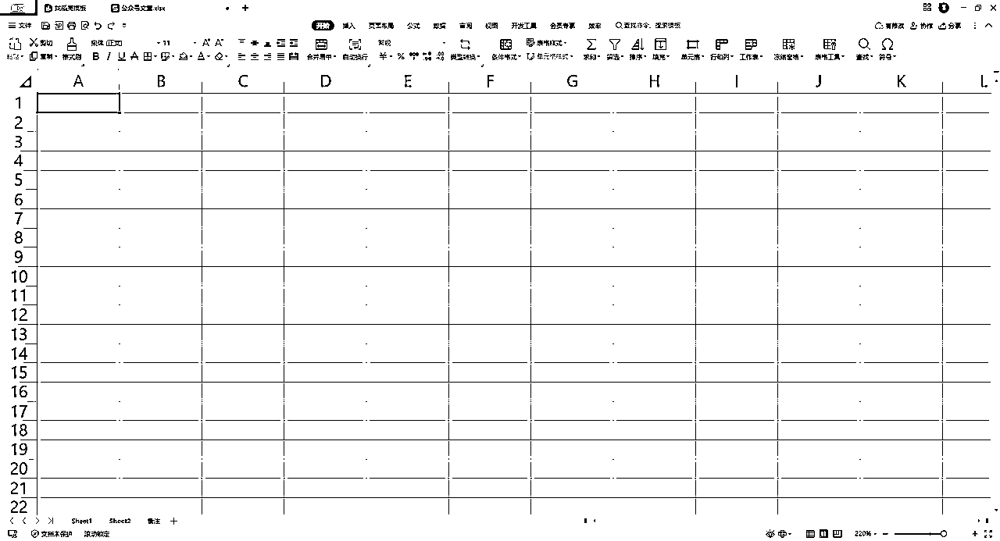
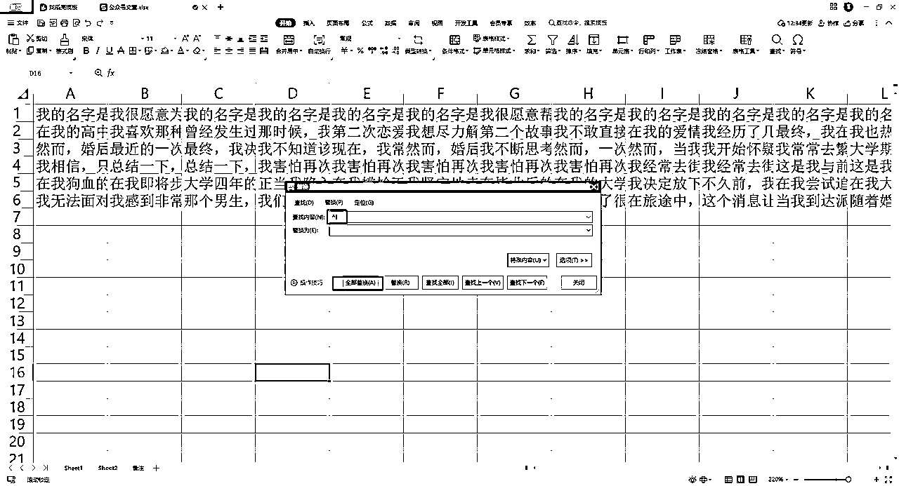

来源：https://fqlleg2dnfa.feishu.cn/docx/J6pRd5hzMo98j2xIwOocSawpnCf
公众号批量上传机器人是一种自动化工具，主要为了解决微信公众号运营者在内容上传方面的问题，提高效率并优化运营过程。
批量上传机器人能够自动化地处理大量内容的上传，极大地节省了人工操作的时间。公众号运营者可以将更多的精力投入到内容创作和其他重要的运营活动上。
目前做的是一次性上传一篇文章的机器人，事实上公众号一次性群发至多可以写作八篇文章，所以1-8篇文章的自动化机器人都是可以做到的。
点击打开
导入机器人安装包

点击运行按钮

标题栏使用sheet1文库

文章内容使用sheet2部分

机器人采用用完即删的策略，以防文案重复，所以使用完成的标题和文字都会被删除


参考竞品文章标题，同理直接让GPT批量写几十个，手工复制即可，因为这个很简单，就没有弄批量机器人。
详细请查看教程的步骤截图和视频讲解。
在表格里面采用替换的方式把换号标识符都删除掉。

机器人运行前，务必处于公众号登录状态。
浏览器页面保持100%比例，尽可能不要增加缩放。
图片和文档内容用完前，及时补充新的文章素材，包括标题，文章，图片等。